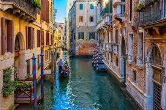

|
Index
|
Languages
|
Gastronomy
|
Lugares
|
Economy
|
Form
|
Characters
|
Five Tourist Places in Italy |
| Place |
City / Region |
Type |
Description |
Main Attractions |
Why It Is Famous |
Image |
| Colosseum |
Rome |
Historical Monument |
The Colosseum is an ancient Roman amphitheater built almost 2,000 years ago. |
Gladiator arena, Roman architecture, underground chambers |
It is a symbol of the Roman Empire and one of the New Seven Wonders of the World. |
 |
| Leaning Tower of Pisa |
Pisa |
Historical Tower |
The Leaning Tower of Pisa is a bell tower known for its noticeable tilt. |
Climbing the tower, cathedral complex, city views |
It is famous worldwide because it leans to one side. |
 |
| Venice Canals |
Venice |
City Landmark |
The canals are waterways that replace streets in the city of Venice. |
Gondola rides, bridges, historic buildings |
Venice is unique for being built on water and having canals instead of roads. |
 |
| Florence Cathedral (Duomo) |
Florence |
Religious Building |
The Florence Cathedral is a large church with a famous red dome. |
Brunelleschi’s dome, Renaissance art, city views |
It represents Renaissance architecture and art. |
 |
| Amalfi Coast |
Campania Region |
Coastal Area |
The Amalfi Coast is a coastal region with cliffs, beaches, and small towns. |
Sea views, beaches, colorful villages |
It is famous for its natural beauty and Mediterranean landscapes. |
 |